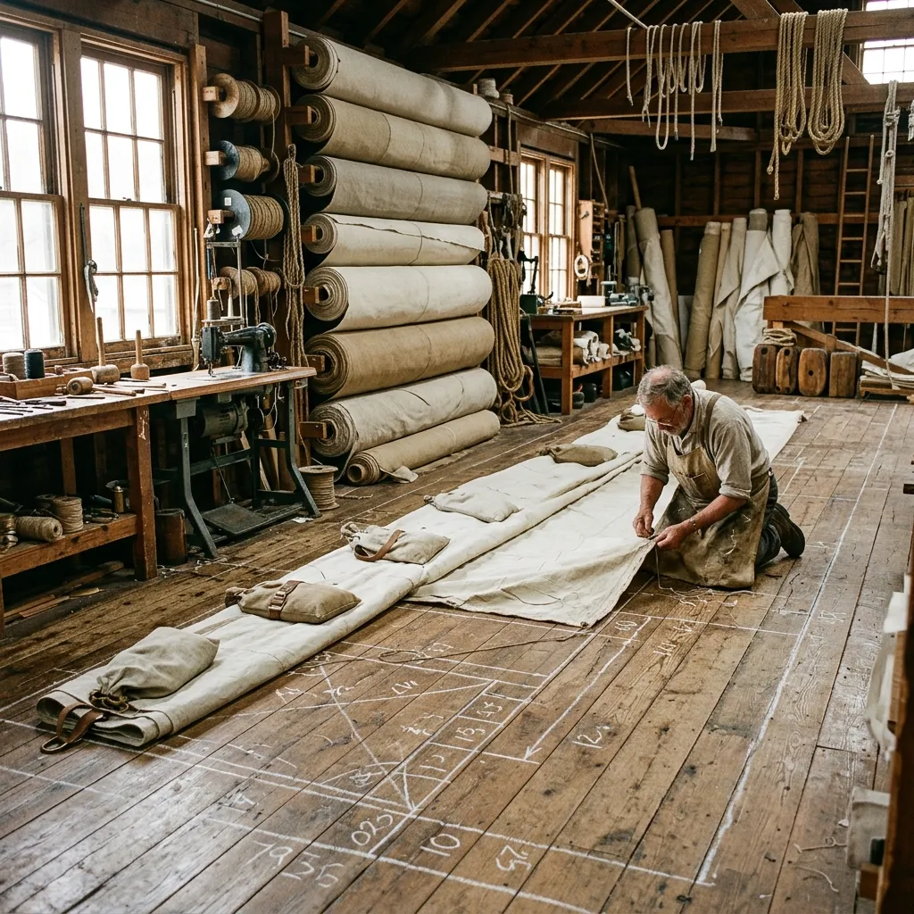
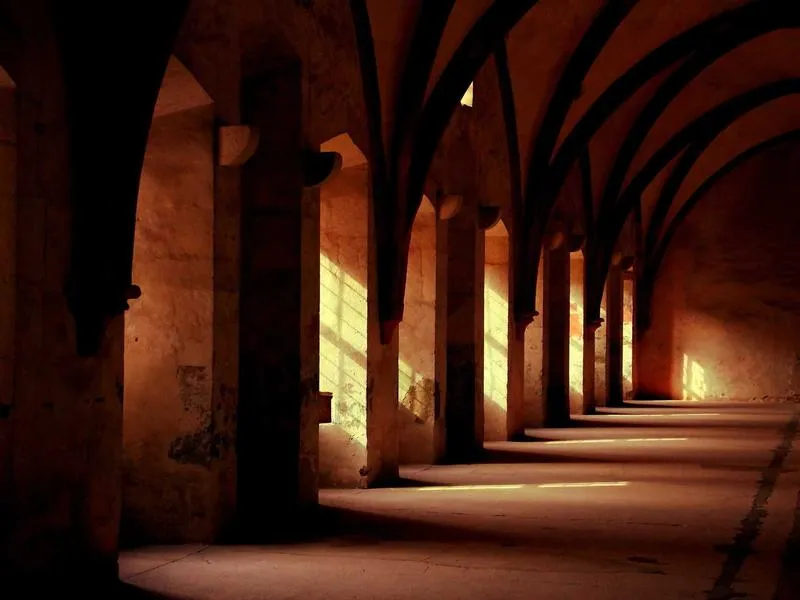

Sails cut by hand on the Isle of Bute.
Flax and hemp canvas for wooden boats that were never meant to carry Dacron.
Halyard & Hemp is a four-loft sailmaker working from a converted herring smokehouse above Rothesay Bay. Since 2011 we have cut, seamed, and roped gaff, gunter, and lug sails for owners who refuse to hang a synthetic rag from a hundred-year-old spar. Every panel is drawn on the loft floor in chalk, cut with a bench knife, and stitched by hand at 28 stitches per 10 cm. Nothing is heat-sealed. Nothing is bonded. The thread is wax.
The Bute lay
Our house seam is called the Bute lay, and it is the reason a Halyard & Hemp mainsail will still be drawing wind in 2065. Twelve tapered panels are laid across the sail on a shallow arc, each overlap set at 38 mm and double-flat-felled with waxed Egyptian flax twine. The seam is walked twice: once by the cutter who laid it, and once by a second stitcher who checks the tension against a brass tension gauge calibrated against the 1904 Admiralty pattern. Leech, luff, and foot are hand-roped with three-strand Italian hemp, served through beeswax and pine tar before it touches the canvas. Cringles are pressed from solid bronze by a foundry in Falkirk, then hand-worked into the tabling with a fid and a mallet. No grommet is ever punched. The finished sail carries a small brass tag stamped with the cutter's initials, the pattern number, and the month it left the loft. We keep a copy of every tag.

The Corryvreckan mainsail
Named for the tidal race off the north end of Jura, the Corryvreckan is our flagship gaff mainsail and the sail most owners commission first. Cut from 12-oz Belgian flax canvas woven at Ronse, it suits vessels between 22 and 38 feet on deck, with luff lengths from 5.8 to 9.4 metres. The head is cut with a 4-degree gaff peak, giving a fuller shape in light airs than a strict traditional flat-cut, without straying from what would have been on the sail plan in 1935. Reef points are hand-tied in tarred hemp at three bands, spaced for a coastal cruising rig rather than a racing one. Every Corryvreckan is fitted to the owner's spars in person: we ask for chalk rubbings of the gaff jaws and a photograph of the mast hoops before a single panel is cut. Standard delivery is fourteen weeks from deposit.
Where the canvas comes from.
A hand-stitched sail is only as honest as the materials laid upon the floor. We do not make vague claims about "natural fibres". Our 12-oz and 16-oz flax canvas is woven in Ronse, Belgium, on looms that have run continuously since 1928, creating a cloth with the tightest possible warp that expands and sets beautifully once damp. Our cordage is three-strand Italian hemp sourced directly from Carmagnola, chosen because it grips a splice better than any domestic substitute.
Every piece of hardware must last the life of the vessel. The heavy cringles we press into the leech and luff tabling are cast from solid bronze by a specialist foundry in Falkirk. When serving our ropes, we draw them through beeswax rendered by a small apiary in Kintyre, mixed precisely with traditional pine tar imported directly from Auer in Sweden. These names and places matter, because they form the foundation of a sail that will withstand fifty years of coastal weather.
See the sails cut from it →What owners and curators say.
"When we hoisted the new mainsail on the cutter in a Force 4 off Pladda, it set perfectly without a crease. You can feel the weight and honesty in the cloth. Halyard & Hemp understand what these spars need."Alistair McRae, Skipper 1932 Fife-designed cutter (38ft on deck)
"The restoration of our 1908 Loch Fyne skiff demanded absolute fidelity to the original 1912 sail plan. Fenella's team delivered a lug sail that passed our most rigorous curatorial inspections, complete with hand-served hemp roping."Margaret Douglas, Head of Collections Scottish Maritime Museum
"We commissioned an entire working wardrobe for a replica 1770s customs vessel. The sails stood up to three months of punishing winter squalls during our west coast shoot, looking magnificent on camera every single day."Thomas Kinsey, Rigging Supervisor BBC Period Drama Production
The questions we get asked most.
What is the standard lead time?
Our standard delivery time is fourteen weeks from receipt of your 30% deposit and the final chalk rubbings of your spars.
How long will a flax sail actually last?
Properly handled, dried correctly, and kept ventilated, a heavy flax mainsail hand-seamed with waxed thread will comfortably draw wind for forty years or more.
Do you provide a reproofing service?
Yes, we suggest returning your sails to the loft every six to eight years for a professional reproofing with traditional compounds and a full seam inspection.